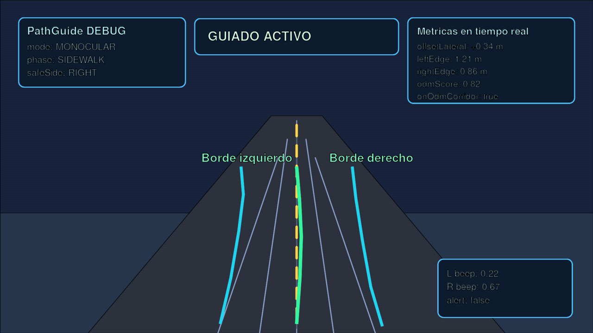

Navegación y guía por pitidos
Lazaro no sustituye Google Maps: lo complementa para personas ciegas.
Navegación con Maps
- Confirmas el destino por voz.
- Se abre Google Maps en modo peatonal.
- Lazaro lee cada giro: «Ahora, gira a la derecha…»
- En cada giro, el móvil vibra distinto según el lado.
| Maniobra | Vibración |
|---|---|
| Izquierda | Dos pulsos cortos |
| Derecha | Un pulso medio |
| Retorno | Tres pulsos |
Necesitas: Maps instalado, acceso a notificaciones para Lazaro, volumen audible.
Chat durante la navegación
Mientras navegas, di «Lazaro» y pide otra cosa (hora, WhatsApp, dónde estoy…). La guía de Maps se pausa en voz (los pitidos de acera pueden seguir). Al terminar, Lazaro pregunta: «¿Seguimos hacia [destino]?»
- Sí → reanuda la navegación
- No / «Para» → cancela la sesión
Rutas grabadas
- Graba el trayecto caminando («graba ruta a casa»).
- Lazaro guarda el perfil espacial (lado seguro, giros, distancias).
- La próxima vez, ofrece la ruta guardada; Maps lleva el tramo urbano y Lazaro la guía fina.
Cada nueva grabación mejora la ruta, como un mapa dibujado entre varios paseos.
Modo paseo
Sin Maps: la cámara analiza el espacio y emite pitidos más fuertes hacia donde hay más sitio libre. También avisa de obstáculos con frases cortas.
Cómo interpretar los pitidos

| Señal | Significado |
|---|---|
| Silencio | Vas bien centrado |
| Pitido izquierdo | Desvíate un poco a la derecha |
| Pitido derecho | Desvíate un poco a la izquierda |
| Ambos lados | Paso estrecho: sigue recto con cuidado |
| Tono continuo | Te acercas a la calzada — vuelve a la fachada |
Sitios favoritos
- En la farmacia: «Guarda sitio farmacia» → sí
- Otro día: «Llévame a farmacia» → Maps al punto exacto